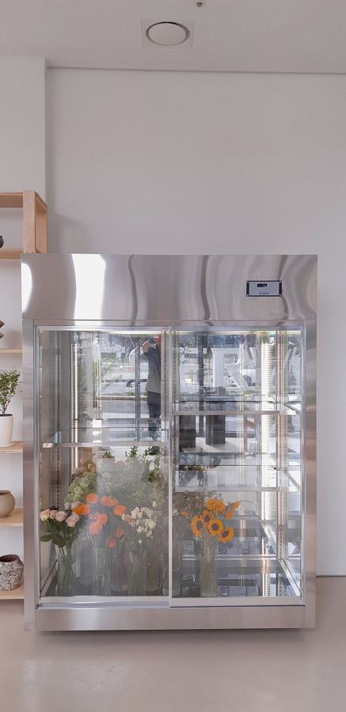
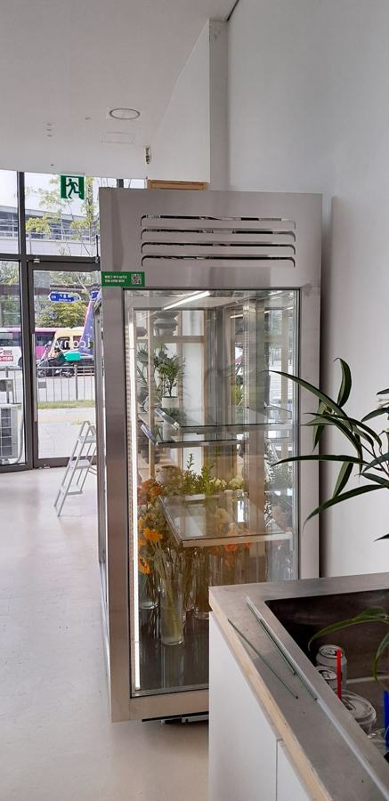
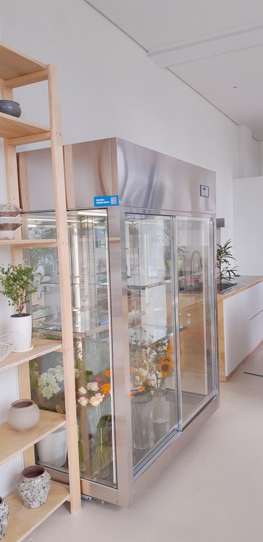
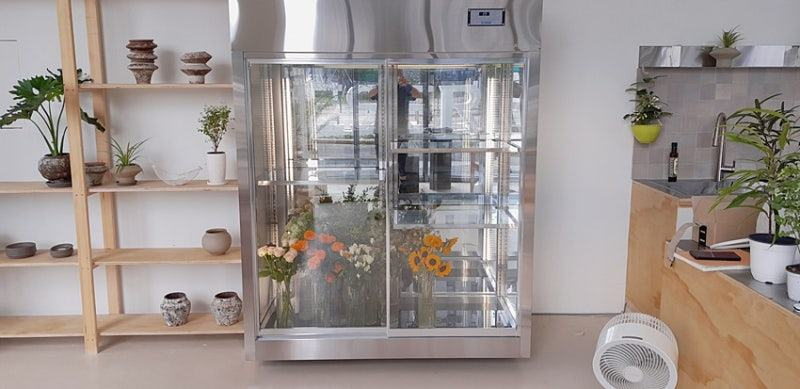
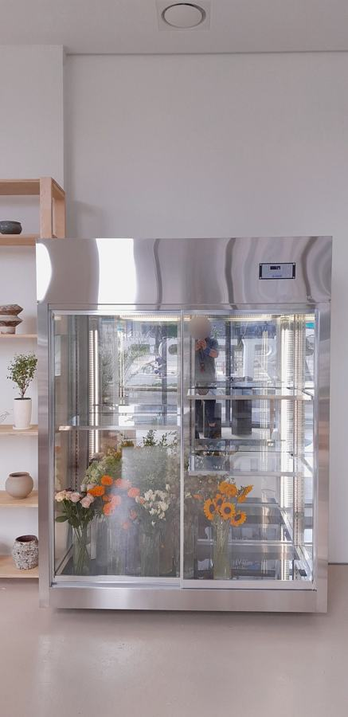
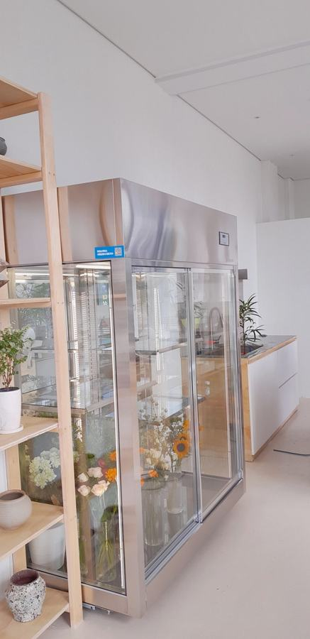
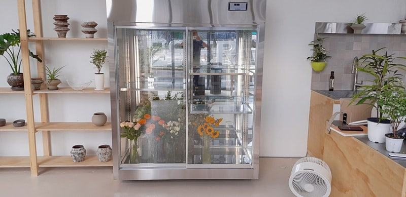
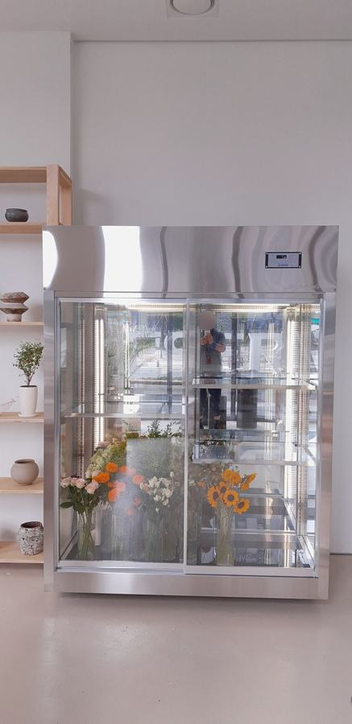
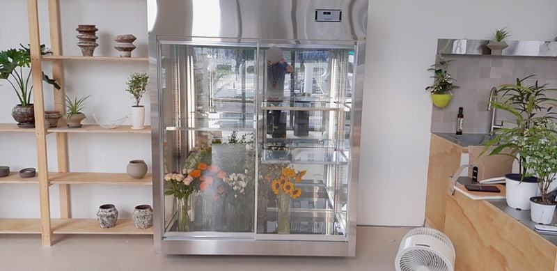
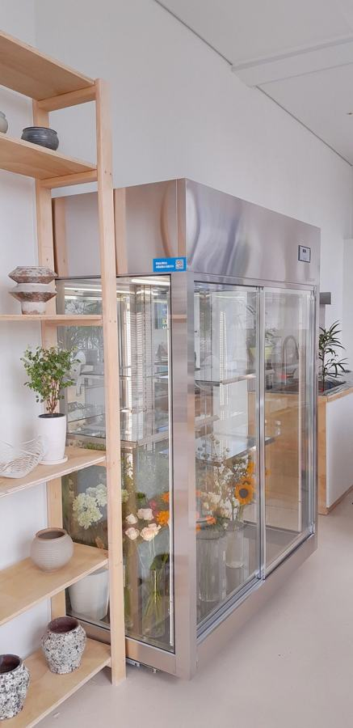

꽃냉장고
꽃냉장고 사이즈, 좁은 꽃집에서 높이부터 정하는 이유

꽃냉장고 사이즈는 가로 폭보다 판매하는 꽃의 길이에 맞는 내부 높이와 물통이 두 줄로 들어가는 깊이를 먼저 정해야 합니다. 그다음 작업대와 손님 동선을 남긴 폭을 배정하면, 좁은 꽃집에서도 꽃이 꺾이지 않고 꺼내기 편한 크기가 나옵니다.
안녕하세요. 꽃집 냉장 쇼케이스를 매장 치수에 맞춰 만드는 한성쇼케이스입니다.
작은 꽃집을 여시는 사장님들은 대개 "벽 한쪽에 들어갈 만큼만 해 주세요"라고 하십니다. 매장이 좁으니 폭부터 생각하시는 거죠.
그런데 막상 들여놓고 나서 장미나 거베라 같은 긴 꽃이 천장에 닿아 꺾이거나, 물통이 한 줄밖에 안 들어가 금방 꽉 차는 경우가 있습니다.
꽃냉장고는 음료나 디저트 진열장과 달리, 키가 큰 꽃을 물통째 세워 보관해야 합니다. 그래서 치수를 정하는 순서가 다릅니다.
오늘은 좁은 꽃집에서 꽃냉장고 사이즈를 높이, 깊이, 폭 순서로 정하는 방법과 크기만큼 중요한 내부 구조를 정리해 드리겠습니다.
1. 높이: 가장 긴 꽃 기준으로
꽃냉장고에서 가장 먼저 정할 치수는 내부 높이입니다. 주로 들이는 꽃 중 가장 긴 줄기를 물통에 꽂았을 때 꽃송이 위로 여유가 남아야 합니다.
꽃이 천장이나 위 선반에 닿으면 꽃잎이 눌리고, 위쪽 냉기를 직접 받아 상하기 쉽습니다.
소품 꽃다발 위주라면 중간에 선반을 넣어 두 단으로 쓰고, 긴 절화가 많다면 선반 없이 통으로 쓰는 칸을 두는 방식이 많습니다.
판매 구성을 먼저 정해야 선반 위치도 정해집니다.
- 가장 긴 절화를 물통에 꽂은 높이를 재 두세요.
- 선반 없이 쓸 통 칸이 필요한지 정하세요.
2. 깊이: 물통이 몇 줄 들어가는지
꽃집은 물통 크기가 거의 정해져 있습니다. 쓰시는 물통 지름을 재서 앞뒤로 몇 줄 들어가는지 계산해 보세요.
한 줄만 들어가는 깊이면 금방 꽉 차고, 너무 깊으면 뒷줄 꽃을 꺼낼 때 앞줄을 다 들어내야 합니다.
좁은 매장이라면 깊이를 무리하게 늘리기보다 두 줄이 편하게 들어가는 깊이로 잡고, 대신 높이와 폭으로 양을 채우는 편이 작업이 수월합니다.


3. 폭: 작업대와 동선을 남기고
폭은 마지막에 정합니다. 꽃집은 냉장고 앞에서 꽃을 꺼내 바로 옆 작업대에서 다발을 만드는 흐름이라, 냉장고와 작업대 사이 거리가 짧을수록 문을 열어 두는 시간이 줄어듭니다.
작업대 자리와 손님이 서서 꽃을 고를 공간을 먼저 빼고 남는 폭을 냉장고에 배정하세요.
출입문 폭도 함께 확인해야 합니다. 높이가 큰 꽃냉장고는 반입할 때 문틀에 걸리는 일이 생기니 문 높이까지 재 두세요.
- 냉장고와 작업대 사이 거리를 정하세요.
- 출입문 폭과 높이를 함께 재 두세요.
4. 크기만큼 중요한 내부 구조
같은 크기라도 구조에 따라 꽃 상태가 달라집니다. 냉각부가 위쪽에 있어 냉기가 아래로 자연스럽게 퍼지는 구조는 위아래 온도 차를 줄여 줍니다.
유리 선반은 공기 흐름을 덜 막아 선반 위치에 따른 온도 차를 줄이는 데 유리합니다.
조명도 크기와 함께 고민해야 합니다. 내부가 높아질수록 조명을 늘리게 되는데, 열이 많은 조명은 꽃을 마르게 합니다.
열이 적은 조명인지, 뒷벽에 거울이나 흑경을 써서 빛을 부드럽게 퍼뜨리는 구성이 가능한지 함께 물어보세요.
외관 소재도 크기를 정할 때 같이 고르시면 좋습니다. 꽃냉장고는 물통 때문에 늘 습기가 많은 환경이라, 스테인리스처럼 습기와 온도 변화에 강한 소재가 오래 써도 변형이 적습니다.
좁은 매장일수록 냉장고가 벽면의 큰 비중을 차지하니, 소재와 프레임 색이 매장 분위기와 어울리는지도 함께 확인해 보세요.
체크리스트
- 가장 긴 절화 기준 내부 높이
- 물통 지름과 앞뒤 들어가는 줄 수
- 작업대·손님 공간을 뺀 폭
- 출입문 폭·높이와 반입 경로
- 냉각부 위치, 선반 재질, 조명 발열
현장에서 자주 보는 경우: 크기만 맞춘 중고 꽃냉장고에서 꽃이 빨리 시들 때
비용을 아끼려고 매장 자리에 들어가는 크기의 중고 꽃냉장고를 먼저 들이는 꽃집이 많습니다. 그런데 "왜 이렇게 빨리 시들지?"라는 고민이 반복되는 경우가 있습니다.
살펴보면 압축기 성능이 떨어지고 단열이 약해졌거나, 내부 구조가 낡아 습도 편차가 커졌거나, 구형 조명 열로 온도가 오르거나, 패킹 틈으로 냉기가 새는 경우였습니다.
이런 장비는 문을 자주 열면 온도 회복이 느려 잎끝 마름이 빨리 나타났습니다. 그래서 꽃냉장고를 고를 때는 크기와 함께 냉각 성능, 패킹, 습도 유지력 세 가지를 먼저 확인하시라고 안내해 드립니다.









자주 묻는 질문
좁은 꽃집인데 꽃냉장고를 맞춤 크기로 만들 수 있나요?
가능합니다. 판매하는 꽃 길이, 물통 크기, 설치 자리 치수를 알려 주시면 높이와 깊이, 폭을 그에 맞춰 정해 제작합니다.
선반은 몇 단이 좋은가요?
긴 절화가 많으면 선반 없는 통 칸이, 소품 꽃다발이 많으면 두 단 구성이 편합니다. 판매 비중에 따라 칸마다 다르게 나누기도 합니다.
설치 후 A/S는 어디서 받나요?
한성쇼케이스는 전국 240여 개 A/S 센터를 운영하고 있습니다. 대표전화 031-986-2458로 접수하시면 됩니다.
매장 조건에 맞춰 만드는 한성쇼케이스
원하시는 제품 사진과 설치할 공간 사진만 보내 주셔도 매장에 맞는 구성을 추천해 드립니다.
- 전국 240여 개 A/S 전담 센터 운영
- 본사 대량 자재 매입으로 품질 대비 합리적인 가격
- 유럽제·삼성 냉각 콤프레셔 적용
- 국내 최초 쇼케이스 전문 디자이너 상주
매장 폭과 원하는 진열 구성을 알려 주세요. 실측과 견적을 안내해 드립니다.
031-986-2458